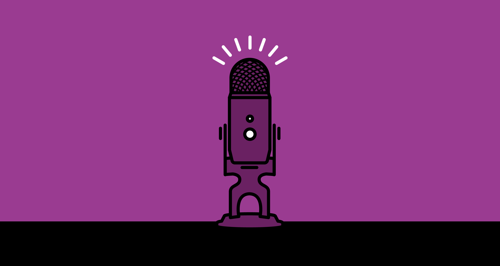

About Cecil
Cecil Gershwin Palmer is the voice of Night Vale and the narrator of Welcome to Night Vale. He works at Night Vale Community Radio as the announcer and self-proclaimed journalist.
The Voice of Night Vale
Cecil's Characteristics
He is described from a photograph as being:
- "not too short or tall"
- "not fat or too thin"
- "with hair"
- "a nose"
- "and eyes"
Cecil's Friends
Cecil's loved, and not so loved, freinds, family, and... other, affiliations... Click the links below to read more about them: